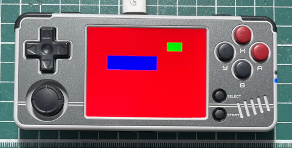

main.c
#include <stdio.h>
#include <stdlib.h>
#include <SDL.h>
int main(int argc, char **argv)
{
const int w = 320;
const int h = 240;
const int bpp = 16;
SDL_Rect rt = { 0 };
SDL_Window *window = NULL;
SDL_Surface *screen = NULL;
SDL_Texture *texture = NULL;
SDL_Renderer *renderer = NULL;
SDL_Init(SDL_INIT_VIDEO);
window = SDL_CreateWindow("main", SDL_WINDOWPOS_UNDEFINED, SDL_WINDOWPOS_UNDEFINED, w, h, SDL_WINDOW_SHOWN);
renderer = SDL_CreateRenderer(window, -1, SDL_RENDERER_ACCELERATED | SDL_RENDERER_PRESENTVSYNC);
screen = SDL_CreateRGBSurface(0, w, h, bpp, 0, 0, 0, 0);
texture = SDL_CreateTexture(renderer, SDL_PIXELFORMAT_RGB565, SDL_TEXTUREACCESS_STREAMING, w, h);
SDL_FillRect(screen, &screen->clip_rect, SDL_MapRGB(screen->format, 0xff, 0x00, 0x00));
rt.x = 50;
rt.y = 50;
rt.w = 30;
rt.h = 30;
SDL_FillRect(screen, &rt, SDL_MapRGB(screen->format, 0x00, 0xff, 0x00));
rt.x = 100;
rt.y = 100;
rt.w = 50;
rt.h = 100;
SDL_FillRect(screen, &rt, SDL_MapRGB(screen->format, 0x00, 0x00, 0xff));
SDL_UpdateTexture(texture, NULL, screen->pixels, screen->pitch);
SDL_RenderClear(renderer);
SDL_RenderCopy(renderer, texture, NULL, NULL);
SDL_RenderPresent(renderer);
SDL_Delay(30000);
SDL_FreeSurface(screen);
SDL_DestroyTexture(texture);
SDL_DestroyRenderer(renderer);
SDL_DestroyWindow(window);
SDL_Quit();
return 0;
}
編譯、執行
$ /opt/a30/bin/arm-linux-gcc \
-I/opt/a30/arm-a30-linux-gnueabihf/sysroot/usr/include/SDL2 \
-lSDL2 -lSDL2_gfx -lSDL2_image -lSDL2_ttf -lSDL2_mixer \
-lGLESv2 main.c -o main
/mnt/SDCARD# export LD_LIBRARY_PATH=.:/config/lib:/customer/lib:/usr/miyoo/lib
/mnt/SDCARD# ./main
